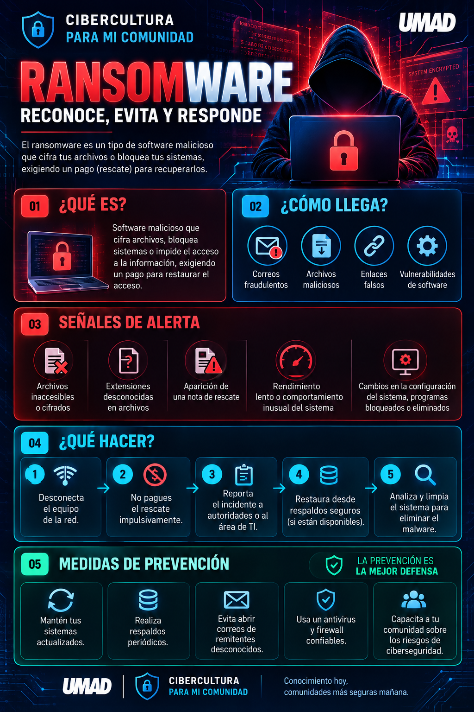
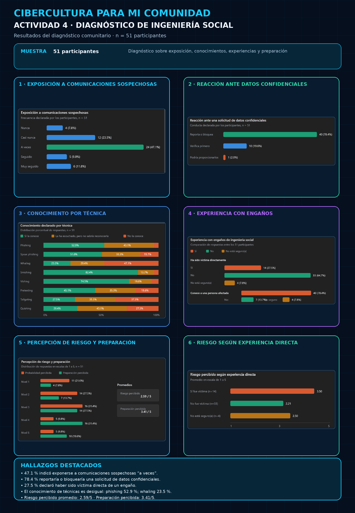
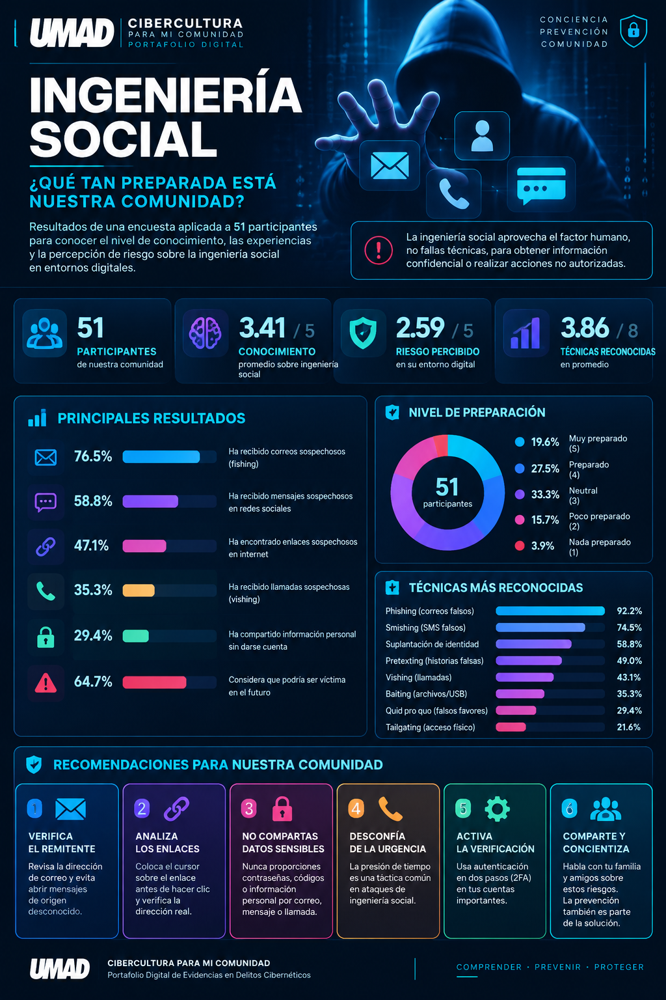
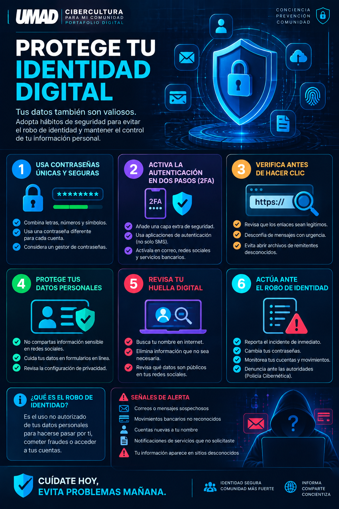
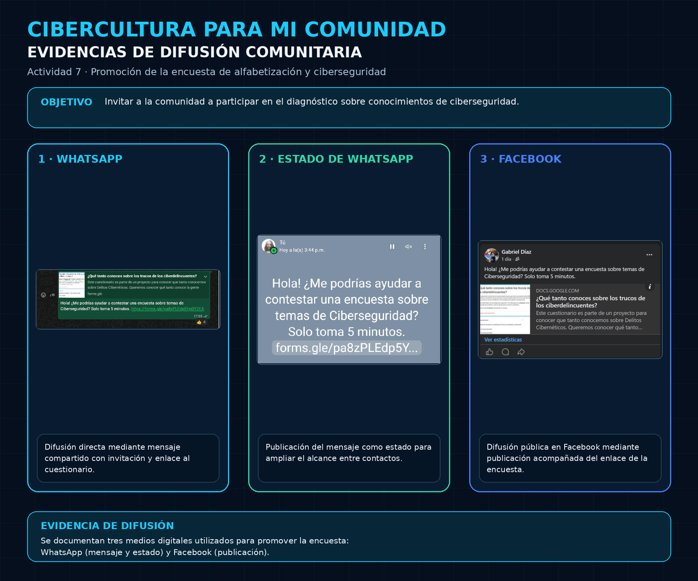
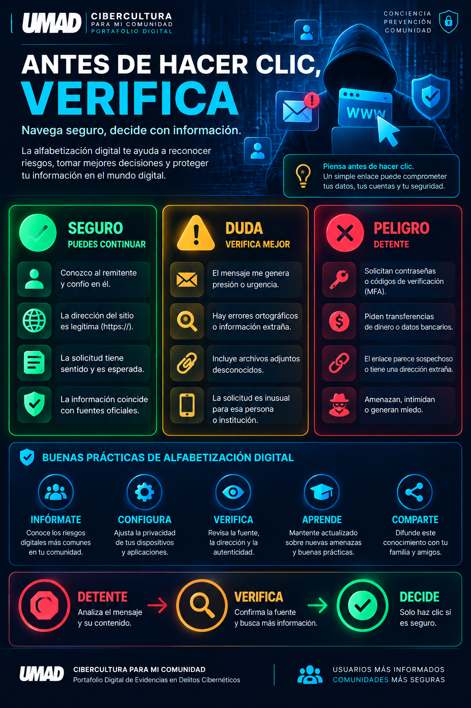

CIBERCULTURA
PARA MI COMUNIDAD
Comprender las amenazas. Reconocer los riesgos. Proteger a nuestra comunidad digital.
Presentación del Proyecto
Información general
-
Nombre del proyecto:
Cibercultura para mi Comunidad: Portafolio Digital de Evidencias en Delitos Cibernéticos
-
Estudiante:
Gabriel René Díaz Lara
-
Universidad:
Universidad Madero (UMAD Online) - Ing. en Seguridad Informática y Redes
-
Materia:
Delitos Cibernéticos
-
Docente:
Dulce María Vázquez Caro
Objetivo del proyecto
Diseñar, estructurar y difundir un portal digital de divulgación orientado a usuarios no especializados, integrando de manera sistemática las evidencias técnico-forenses de la materia Delitos Cibernéticos.
El propósito central es desmitificar la complejidad técnica de amenazas críticas (fraude financiero, ransomware, interceptación de tráfico y engaños psicológicos), fortaleciendo la alfabetización digital comunitaria, transfiriendo hábitos de ciberhigiene y demostrando impacto social medible a través de diagnósticos de campo y recursos multimedia accesibles.
Análisis Integral de un Delito Cibernético
Ataques cibernéticos contra participantes del Sistema de Pagos Electrónicos Interbancarios (SPEI)
Laboratorio de Seguridad en Redes
Inspección de Tráfico, Vulnerabilidad de Protocolos Base y Criptografía Práctica
Reconocimiento y Escaneo
Barrido con nmap -sn y sondeo TCP con nmap -sV sobre nodo objetivo Ubuntu Server.
Análisis de Protocolos (Wireshark)
Captura de tramas broadcast ARP, consultas DNS en UDP 53 y Three-Way Handshake TCP en puerto 80.
995 Puertos RSTCriptografía en Acción
Efecto avalancha en SHA-256, cifrado simétrico AES-256-CBC, llaves asimétricas RSA de 2048 bits y TLS 1.3.
OpenSSL & WiresharkEvidencias Técnicas Obtenidas
PORT STATE SERVICE VERSION
21/tcp open ftp vsftpd 3.0.5
22/tcp open ssh OpenSSH 10.0p2
53/tcp open domain ISC BIND 9.20.11
80/tcp open http Apache httpd 2.4.64
443/tcp open ssl/http Apache httpd 2.4.64
MAC: 00:0c:29:e8:b3:fc (VMware)Paquete 44: Kali -> Ubuntu [SYN] Seq=0
Paquete 45: Ubuntu -> Kali [SYN, ACK] Seq=0 Ack=1
Paquete 46: Kali -> Ubuntu [ACK] Seq=1 Ack=1
Raw Seq SYN: 3987939481
Raw Ack: 1967861282
Status: Conexión Establecida (3-Way)Original: 'Hola Mundo - ENSA Modulo 3'
SHA256: 5d6719a6814dbeddfb11923cffdc...
Modificado ('m' minúscula):
SHA256: 4bed0296d47b254d37fd0adbf6b3...
Efecto Avalancha: Integridad alterada 100%
Evidencias de la práctica
Haz clic para ampliar el compendio gráfico de capturas de tráfico en Wireshark, barridos Nmap y comandos criptográficos ejecutados.
Reflexión Crítica: La necesidad ineludible de la Criptografía
Al inspeccionar el tráfico en texto claro con HTTP (método GET, rutas, agentes) se constata que el perímetro físico ha muerto. Protocolos como ARP no autentican el origen, permitiendo ataques de envenenamiento (ARP Spoofing / MitM). Implementar algoritmos robustos (AES-256 para confidencialidad, SHA-256 para integridad y TLS 1.3 para transporte) junto a firmas asimétricas RSA no es opcional: es la única garantía contra la intercepción, espionaje y manipulación ilegítima según el Art. 211 Bis del CPF y la LFPDPPP.
Actividad 2 - Seguridad en Redes, Wireshark y Criptografía (28 páginas)
Video de Concientización sobre Ransomware
Rol White Hat: Análisis del Incidente de Ransomware en PEMEX y Prevención
Resumen Técnico del Caso PEMEX
En noviembre de 2019, la infraestructura de Petróleos Mexicanos sufrió el secuestro de información mediante una variante de ransomware (DoppelPaymer), paralizando servicios administrativos y de facturación. Los atacantes exigieron un rescate millonario en criptomonedas.
Medidas Preventivas Clave:
- Regla 3-2-1 de Respaldos: 3 copias, 2 medios diferentes, 1 en ubicación remota/offline.
- Actualización y Parchado: Mitigación de vulnerabilidades conocidas en SO y software.
- Filtrado de Correo y EDR: Bloqueo proactivo de adjuntos maliciosos y enlaces phishing.
- Capacitación al Usuario: El eslabón humano entrenado para desconfiar de remitentes sospechosos.

Material Gráfico Educativo
Haz clic para ampliar la infografía descargable en alta resolución.
Diagnóstico de Ingeniería Social
Investigación de campo en entornos familiares y empresariales (Muestra: n = 51 participantes)
Exposición a Comunicaciones Sospechosas
Reciben correos, SMS o llamadas fraudulentas al menos "a veces" o "muy seguido".
Víctimas Directas de Fraude
Ha sido víctima directa con pérdida de dinero, datos o cuentas secuestradas.
Víctimas en Entorno Cercano
Conoce a un familiar, compañero o amigo cercano afectado por ciberdelincuentes.
Nivel de Reconocimiento por Técnica de Engaño (n = 51)
Hallazgos Clave y Conclusiones del Diagnóstico
Existe una paradoja de seguridad: el 98% afirma que jamás compartiría datos confidenciales y la preparación promedio percibida es de 3.41/5; sin embargo, técnicas críticas como el Quishing (códigos QR falsos en restaurantes o parquímetros) y el Whaling registran un desconocimiento de hasta el 70%. Además, una sola cuenta de WhatsApp secuestrada se convierte en infraestructura de ataque contra toda la red familiar o laboral de confianza.

Evidencias de la práctica
Haz clic para ampliar las capturas de difusión en medios digitales, participación comunitaria y dataset de respuestas obtenidas.

Infografía del Diagnóstico Comunitario
Haz clic para ampliar la infografía con el resumen visual de técnicas, estadísticas y recomendaciones.
Actividad 4 - Estudio cuantitativo y cualitativo, dataset y cruces (38 páginas)
Video Informativo sobre Usurpación de Identidad
Tácticas de suplantación, secuestro de cuentas y protección de la huella digital
Resumen del Contenido
La usurpación de identidad digital ocurre cuando un atacante se apropia ilegítimamente de credenciales, fotografías o números telefónicos para cometer fraudes bancarios, solicitar préstamos a nombre de la víctima o extorsionar a sus contactos cercanos.
Recomendaciones Fundamentales:
- Activar Verificación en Dos Pasos (2FA): Usando apps autenticadoras en lugar de SMS en WhatsApp y correo.
- Gestores de Contraseñas: Evitar contraseñas reutilizadas; usar cadenas aleatorias de 16+ caracteres.
- Auditoría de Privacidad en Redes: Limitar el acceso público a datos biográficos y familiares.
- ¿Qué hacer si te ocurre? Notificar inmediatamente a contactos, congelar cuentas bancarias y presentar denuncia ante el Ministerio Público/FGR.

Infografía de Identidad Digital
Haz clic para ampliar la guía visual sobre cómo prevenir y responder ante la usurpación de identidad.
Acciones a considerar
Higiene de Contraseñas
Uso de frases de paso y no reutilización en servicios críticos.
Señales de Alerta
Urgencia artificial, ofertas increíbles y enlaces acortados.
Protocolo de Respuesta
Bloqueo de SIM, reporte en plataforma y preservación de capturas.
Guía Rápida Comunitaria
Medidas de acción inmediata compartibles en grupos de WhatsApp.
Video de Alfabetización Digital
Delitos Digitales de Alto Impacto: Grooming y Protección a Nuestra Niñez y Juventud
Grooming: Amenaza Silenciosa
El grooming es un proceso sistemático mediante el cual un adulto establece contacto con un menor de edad ganando su confianza y afecto para fines de explotación o extorsión sexual. La alfabetización digital no es solo técnica: es una herramienta de protección de derechos humanos y seguridad física.
Estadísticas Críticas:
Niñas, niños y adolescentes en línea ha recibido contactos sospechosos con intenciones dudosas.
De los contactos ocurren en videojuegos multijugador y redes de mensajería instantánea.
De las víctimas guarda silencio por vergüenza, culpa o miedo al castigo.
Mensaje de Concientización Social
"La alfabetización digital en el hogar no consiste en prohibir o vigilar con desconfianza, sino en construir puentes de diálogo donde niñas, niños y jóvenes se sientan seguros de pedir ayuda ante cualquier situación que los incomode en internet."
Ciberseguridad para la Comunidad
Consejos prácticos, directos y aplicables para toda la familia sin conocimientos técnicos

Evidencias de Difusión Comunitaria
Haz clic para ampliar las capturas de difusión en medios digitales (Facebook, WhatsApp, grupos estudiantiles) y métricas de alcance obtenidas.
Contraseñas Robustas
Usa frases de 4 palabras aleatorias (ej: café-guitarra-nube-lago). No uses fechas de cumpleaños ni nombres de mascotas.
Doble Factor (2FA)
Activa la verificación en dos pasos en WhatsApp, Google y banca digital. Ese código adicional frena el 99% de accesos no autorizados.
Filtro ante Llamadas Falsas
Tu banco NUNCA te llamará pidiéndote códigos SMS, contraseñas o transferir dinero a una "cuenta de protección". ¡Cuelga de inmediato!
Cuidado con Códigos QR
Antes de escanear un código QR en la calle o menús, fíjate que no tenga una calcomanía sobrepuesta y verifica siempre la URL a la que conduce.
Actualizaciones al Día
Mantén el sistema operativo de tu celular y computadora actualizado. Los parches de seguridad corrigen las puertas traseras conocidas.
Copias de Seguridad
Guarda tus fotos y documentos importantes en un disco duro externo desconectado de internet para ser inmune ante un ransomware.
Enlaces de Paquetería Falsos
Si recibes un SMS diciendo "tu paquete está retenido, ingresa a este enlace", desconfía. Revisa el estado directamente en la web de la empresa.
Diálogo Familiar Abierto
Conversa con menores y adultos mayores sin juzgar. Enséñales que ante cualquier duda o mensaje extraño, la prioridad es pausar y pedir ayuda.
Conclusiones Generales del Portafolio
Reflexión personal, aprendizajes obtenidos y el papel de la alfabetización digital

Infografía de Alfabetización Digital y Buenas Prácticas
Haz clic para abrir y descargar la guía visual en alta definición para compartir con tu comunidad.
Reflexión Personal y Aprendizajes
El desarrollo de este portafolio a lo largo del semestre en la Universidad Madero me permitió dimensionar que la seguridad informática trasciende por completo la fría ejecución de comandos o la configuración de cortafuegos. El verdadero reto radica en comprender que el factor humano y los protocolos de base operan estrechamente entrelazados.
Ver cómo un protocolo fundacional como ARP acepta anuncios apócrifos sin autenticación en Wireshark, o constatar mediante una encuesta real a 51 personas que casi el 80% conoce a una víctima directa de fraude, confirma que la ciberseguridad debe ser comunitaria, interdisciplinaria y orientada a la empatía social.
Trascendencia de la Alfabetización Digital
La alfabetización digital contemporánea no puede consistir únicamente en aprender a utilizar un dispositivo inteligente; debe constituir un hábito de pensamiento crítico y defensivo. Frente al avance de la inteligencia artificial generativa, el vishing sintetizado por voz y las campañas masivas de ingeniería social, la mejor defensa de una sociedad no son las herramientas punitivas, sino la capacidad de cada individuo para dudar metódicamente, pausar ante la urgencia artificial y verificar canales confiables.
Como futuro ingeniero en Seguridad Informática y Redes, mi compromiso es transformar el conocimiento técnico complejo en guías claras y accesibles para proteger activamente a mi comunidad.
Referencias Bibliográficas (APA 7)
Fuentes formales, normativas, técnicas y metodológicas consultadas a lo largo del portafolio